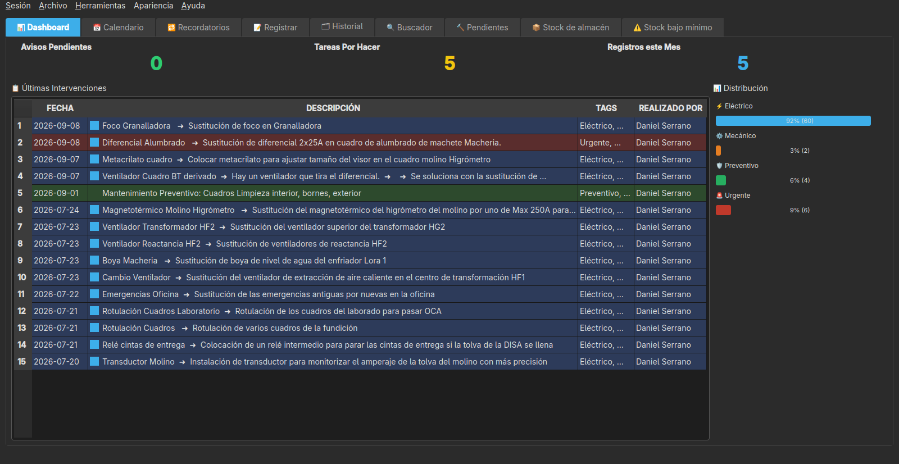
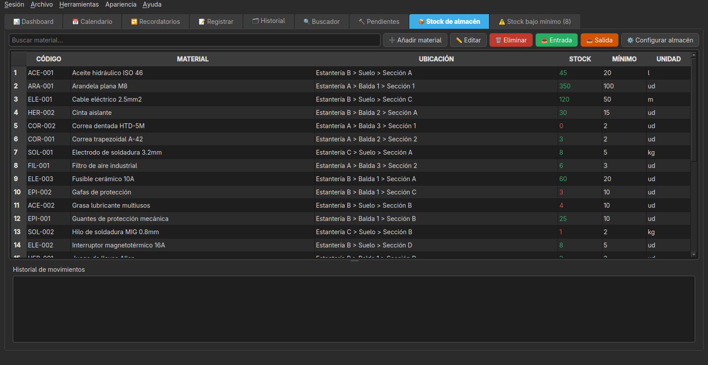
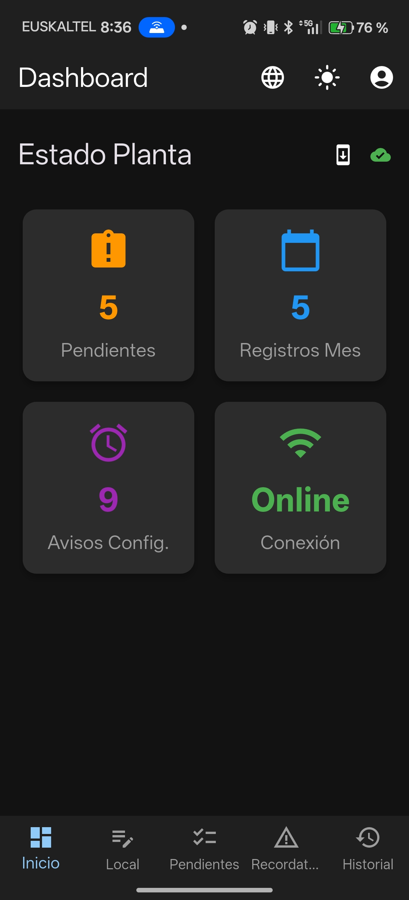
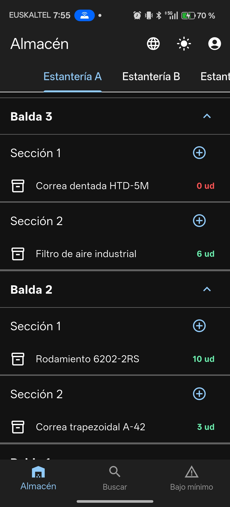
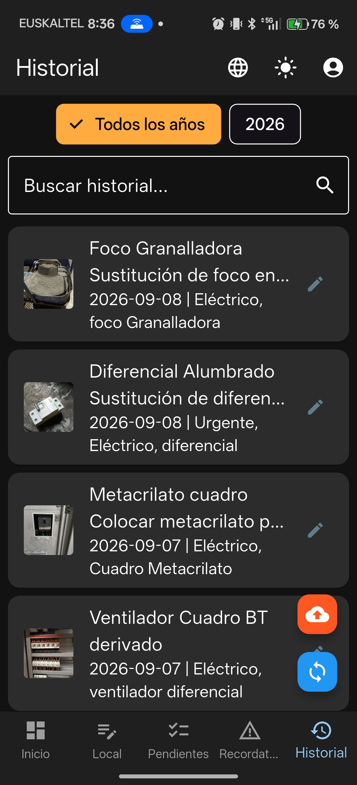

MantPro
MantPro es un CMMS (sistema de gestión de mantenimiento) gratuito y de código abierto para gestionar el mantenimiento preventivo y correctivo de una planta, taller o flota, con aplicación de escritorio y app móvil, desarrollado por AnabasaSoft.
Características
Aplicación de Escritorio (PC)
Es el centro de control del sistema: desde el PC se gestionan usuarios, máquinas, historial de intervenciones, stock de almacén e informes, y se sincroniza con las apps móviles.
- Gestión de Usuarios y Roles: Login con usuario y contraseña, roles de administrador, técnico y almacén (combinables), alta/baja y restablecimiento de contraseñas.
- Autoría y Auditoría: Cada intervención guarda quién la realizó, y un registro de cambios deja constancia de quién edita o borra cada trabajo.
- Permisos por Registro: Un técnico solo edita o borra sus propios trabajos; un administrador puede gestionar y reasignar cualquier registro.
- Sesiones de Dispositivos: Lista los móviles vinculados a cada usuario y permite revocar sesiones concretas.
- Temas Visuales: Modo oscuro, claro o un estilo retro inspirado en Windows 98.
- Calendario Interactivo: Visualiza y gestiona tareas de mantenimiento con códigos de color.
- Historial Completo: Registro histórico de todas las intervenciones, con fotos de antes y después.
- Informes en PDF, CSV y Excel: Generación de informes con logo personalizable y filtro por técnico.
- Sincronización Móvil: Servidor integrado (arranca solo) para sincronizar con las apps móviles vía QR.
- Sistema de Búsqueda: Búsqueda avanzada por fechas, etiquetas y contenido.
- Copias de Seguridad: Backup automático incremental al cerrar la app y backup manual completo, con restauración con barra de progreso.
- Sistema de Etiquetas: Categorización con etiquetas (Urgente, Eléctrico, Mecánico, Preventivo).
- Tareas Pendientes: Creación, asignación a un técnico concreto y opción de revertir un trabajo completado por error.
- Recordatorios: Avisos de mantenimiento que se repiten automáticamente.
- Control de Stock de Almacén: Estanterías, baldas y secciones configurables, fichas de materiales con foto y alertas de stock bajo mínimo.
- Control de Maquinaria: Árbol de máquinas y submáquinas con foto, contador de trabajos e histórico vinculado.
Aplicación Móvil MantPro (Android)
Pensada para el técnico sobre el terreno: permite registrar intervenciones al momento, con fotos y notas, y sincronizarlas con el PC en cuanto hay conexión.
- Acceso con Usuario: Cada técnico inicia sesión una vez y la sesión queda guardada en el dispositivo.
- Registro Rápido: Captura de intervenciones sobre el terreno, firmadas automáticamente con su usuario.
- Cámara Integrada: Toma y edición de fotos con anotaciones.
- Editor de Imágenes: Dibuja sobre las fotos para marcar áreas de interés.
- Sincronización Automática: Envío automático de datos al PC mediante código QR, con actualización en segundo plano al abrir.
- Almacenamiento Local: Guarda los registros sin conexión hasta que se sincronicen.
- Trabajos Pendientes: Visualiza y gestiona las tareas asignadas desde el PC, con filtro "Solo míos".
- Material Usado: Añade a un trabajo el material de almacén empleado, descontándolo automáticamente del stock.
- Vincular Máquina: Selecciona la máquina o submáquina en la que se ha hecho el trabajo.
- Etiquetas Rápidas: Sistema rápido de etiquetado con casillas de verificación.
- Modo Offline: Trabaja sin conexión y sincroniza cuando esté disponible.
- Recordatorios Diarios: Notificación si hay trabajos pendientes sin completar.
Aplicación Móvil MantPro Stock (Android)
Aplicación independiente para consultar y mover el stock de almacén desde el móvil sin necesidad de la app de trabajos.
- Navegación del Almacén: Árbol de estanterías, baldas y secciones, igual que en el PC.
- Búsqueda de Materiales: Por nombre, código, descripción o ubicación.
- Entradas, Salidas y Traslados: Registra movimientos de stock con motivo opcional.
- Aviso Visual de Stock: Cantidad resaltada en rojo o verde según el mínimo configurado.
- Modo Offline: Consulta con la última información sincronizada si no hay conexión.
- Recordatorio Diario: Notificación para comprobar la cantidad real de varios materiales al azar.
Cómo Funciona
Cada técnico registra sus intervenciones desde el móvil, en el momento y con fotos de antes y después si hace falta. Todo se sincroniza automáticamente con la aplicación de escritorio, donde queda ordenado por máquina, fecha y persona, listo para consultarlo o generar un informe en PDF. La sincronización usa un código QR para vincular el móvil con el PC y funciona sin necesidad de internet, dentro de la misma red WiFi.
Vídeo de Demostración
Capturas de Pantalla





← Volver a Aplicaciones